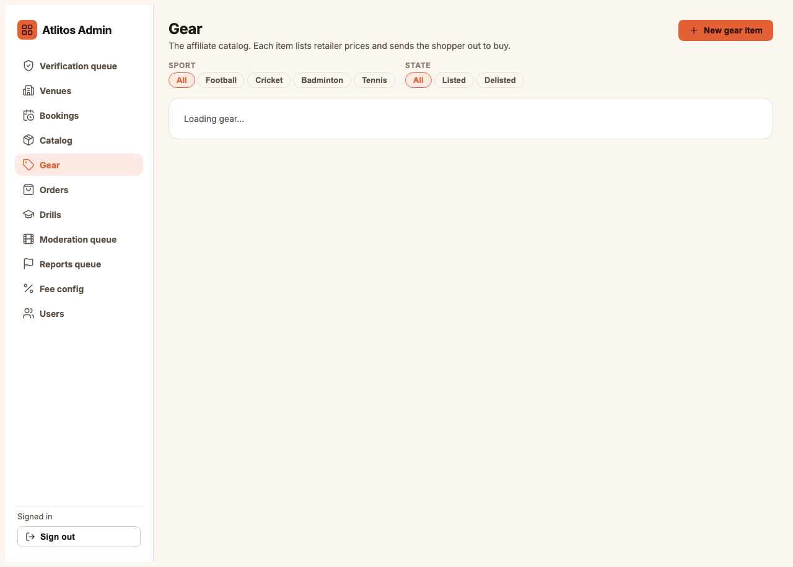
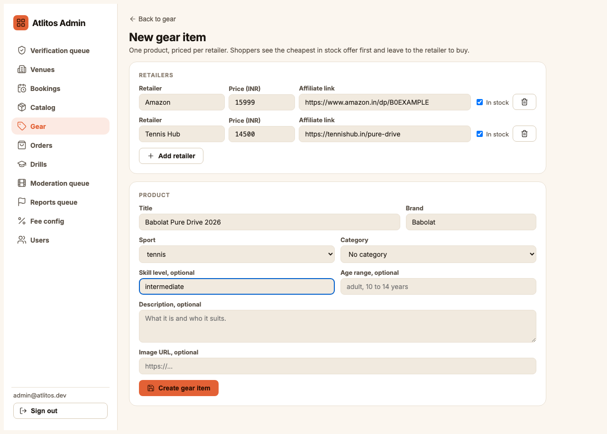
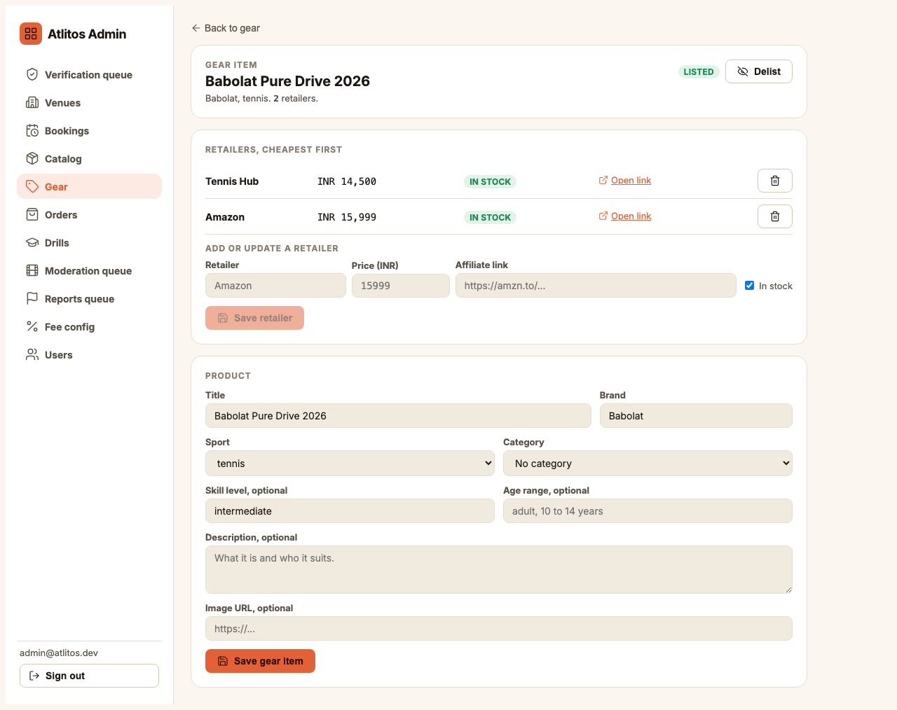
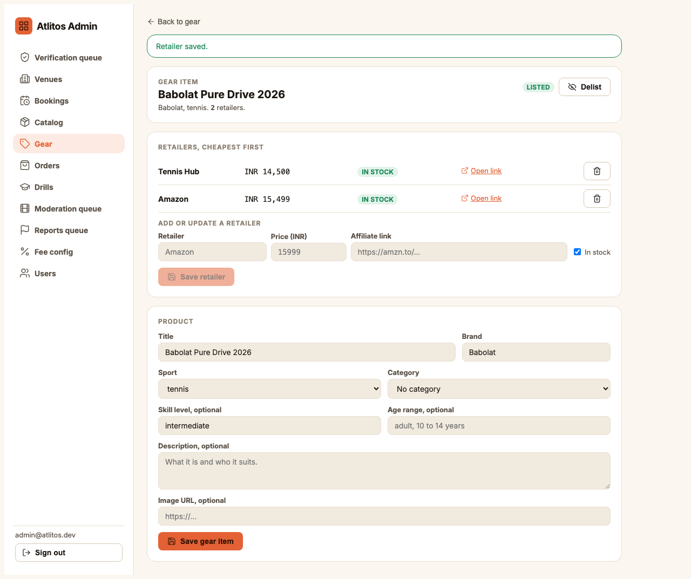
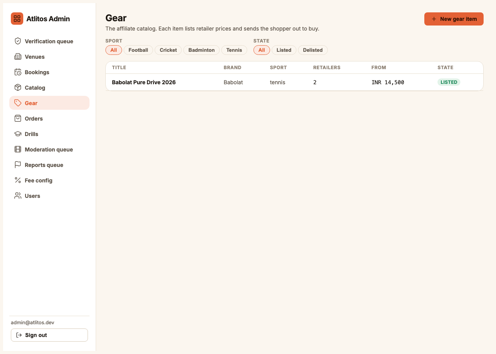
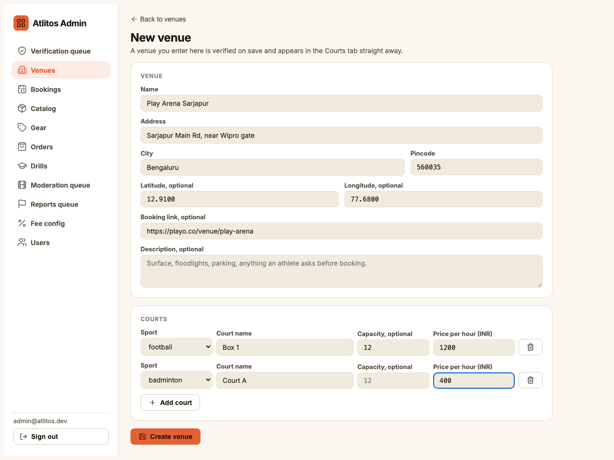
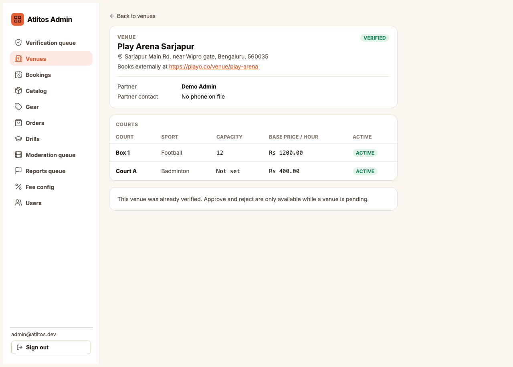
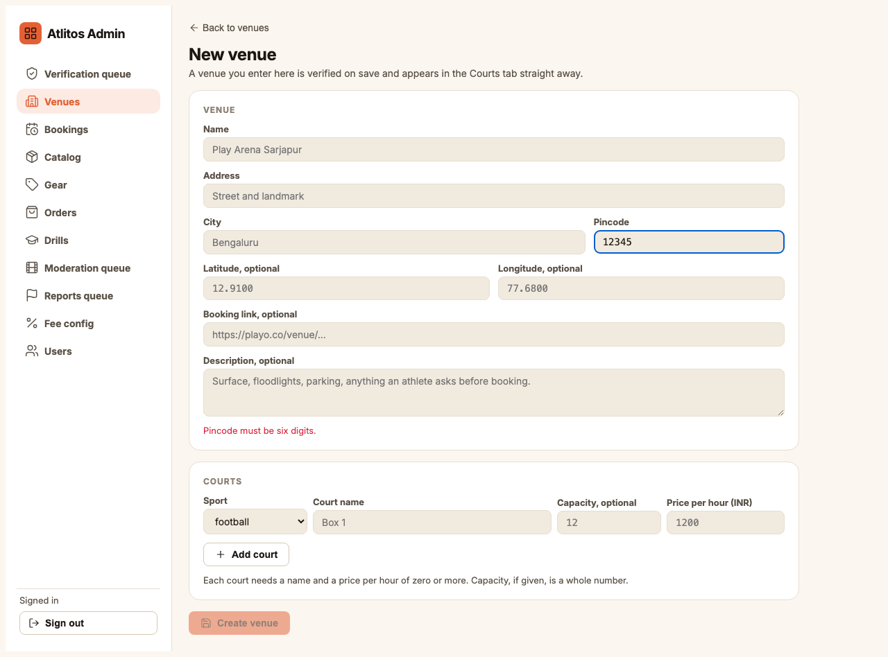

Three kinds of records, two tools. Gear and courts are entered in the admin. Coaches are entered in the app itself, because a coach is an account, not a row. Every screen below is the real admin, photographed on a test database.
The sidebar shows Gear and Venues. Everything you save is recorded with your name in the audit log, so there is no need to keep a separate list of what you entered.
Gear
Sidebar, Gear
The shop works on the affiliate model: Atlitos does not sell the item. It shows the price at several retailers and sends the shopper to the cheapest one. So one gear item is a product plus one line per retailer.

The Gear list. Filter by sport or by Listed and Delisted. Click New gear item.
Entering one item
Retailers first. Retailer name (Amazon, Decathlon, Tennis Hub), the price in rupees as a plain number (15999, no commas or symbol), and the affiliate link. The link has to start with http:// or https://. Add retailer for each extra one. Untick In stock if the retailer is out of stock but you want the line kept.
Then the product. Title, brand, sport (or Any sport for something like a water bottle), category if one fits, skill level and age range in plain words, an image URL if you have one.
Create gear item. The button only turns on when every retailer line is complete.

New gear item, filled. Two retailers (Amazon at 15999, Tennis Hub at 14500) and the product below.

After saving. Retailers sort cheapest first. Each has an Open link check and a bin to remove a wrong line.
Updating a price
Open the item, type the retailer's name exactly as before with the new price and link, and Save retailer. It replaces that retailer's line rather than adding a second one. This is how a weekly price check is entered.

Price refresh. Amazon re-entered at 15499: still one Amazon line, now second behind Tennis Hub.

Back on the list. Retailer count, the cheapest in stock price, and whether shoppers can see it.
Delist hides an item from shoppers without deleting it. List brings it back. Nothing in the catalog is ever deleted, only hidden.
Courts
Sidebar, Venues, New venue
For now a court is an affiliate link as well: the venue's own booking page (Playo, Hudle, the venue's site). The venue is entered with its courts, and the booking link is where the app will send the athlete.
Name, address, city, six digit pincode.
Latitude and longitude are optional, but the Courts tab sorts by distance, so a venue without them sorts last. In Google Maps, right click the pin; the two numbers at the top of the menu are the ones.
Booking link: the page where an athlete books this venue today.
Description: surface, floodlights, parking, changing rooms, whatever an athlete asks before booking.
At least one court. Sport, the name the venue itself uses (Box 1, Court A), capacity if known, price per hour in rupees. Add court for each.
Create venue. It is verified on save and visible in the app straight away.

New venue, filled. Play Arena Sarjapur with a booking link and two courts (Box 1 at 1200 per hour, Court A at 400).

After saving. Verified, the booking link shown as Books externally at, both courts listed with their prices.

Mistakes are caught before saving. A five digit pincode keeps the Create button off and says why. The same happens for a booking link without https, a missing court, or a negative price.
Coaches
The app, atlitos-app.vercel.app
A coach is a real account with a profile the coach normally fills in themselves. When entering one on a coach's behalf, use the coach's real email, because that is the account they will take over.
Register with the coach's email and a temporary password. At role select choose Coach.
The coach setup has seven steps: Sport, Photo, Experience, Certificates, Pricing, Availability, About. Fill all of them from what the coach gave you. Pricing and Availability are what athletes book against, so get those exactly right.
Submitting the last step creates a verification request. An admin approves it under Verification queue. Until approved the coach is not listed.
Send the coach their login and ask them to change the password in Settings.
What to have ready
Gear: for each item, a product page on each retailer you want listed. Until the affiliate programme approval arrives, the plain product URL is fine and gets replaced in place later.
Courts: the venue's booking page, address, prices per hour per court, and the coordinates.
Coaches: sport, years of experience, a photo, certificates as images, session prices, weekly availability, a short bio, city and state.
Rules
Never invent a price, a rating or a count. If a retailer has no price shown, leave that retailer out.
Copy the venue's and coach's own names and spellings.
No emojis anywhere. Descriptions are plain sentences.